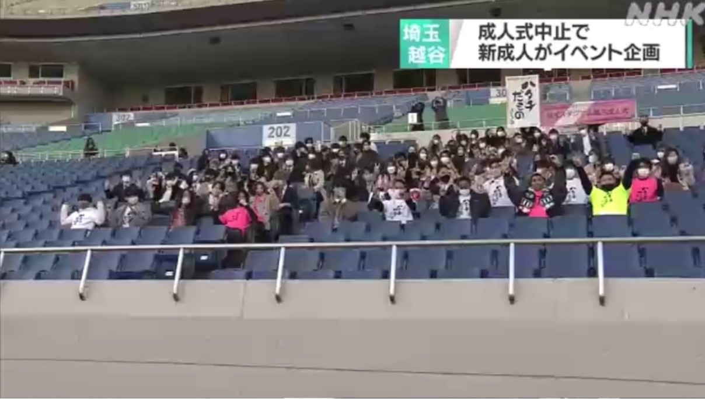
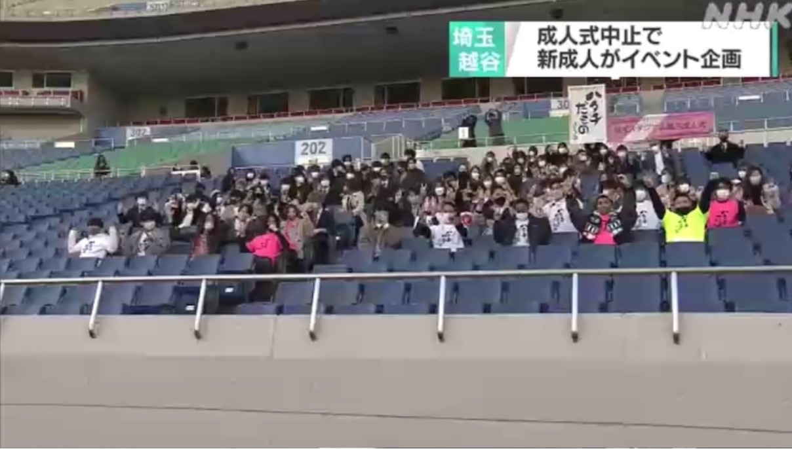
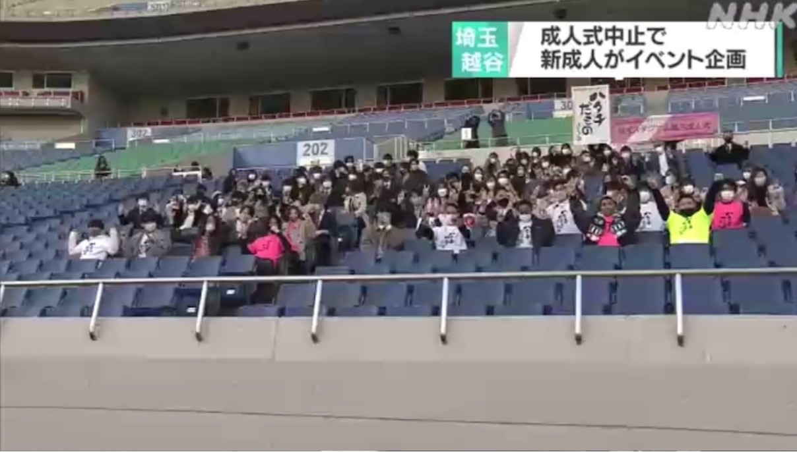

2021年、新型コロナウイルスの影響で、私が住む越谷市では成人式が中止となってしまいました。 一生に一度の成人式が失われることに寂しさを感じ、何かできることはないかと考えていたとき、 元越谷市立西中学校のサッカー部のコーチや先生方と共に**「越谷ミレニアム&+1成人式@埼玉スタジアム」**を企画する機会を得ました。
困難な状況の中でも、仲間たちと協力して成人式を企画し、多くの人々の支援を得られたことは、 私にとってかけがえのない経験となりました。 特に、映像制作を通じてイベント全体の盛り上げに貢献できたこと、そして当日の参加者の笑顔を見たときの達成感は忘れられません。 この経験は、目標に向かってチームで協力することの重要性や、困難な状況を乗り越える力を私に与えてくれました。
以下に、当時の活動の様子を伝えるメディア掲載の画像や映像を掲載します。
